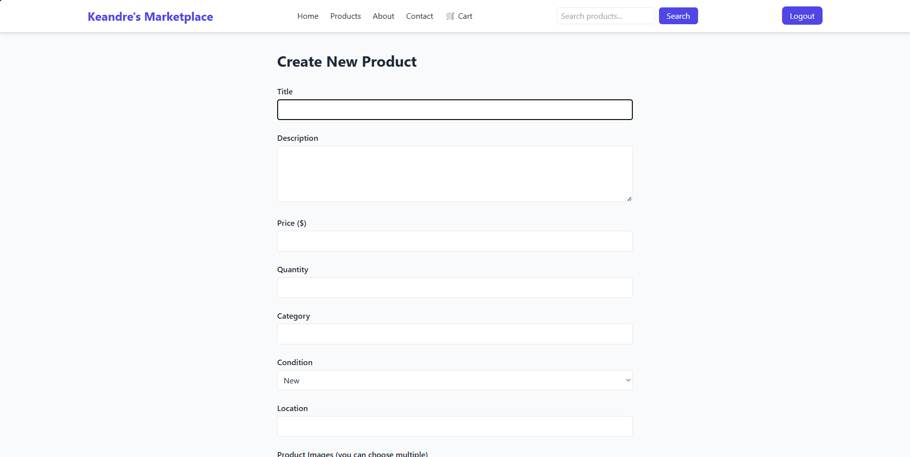
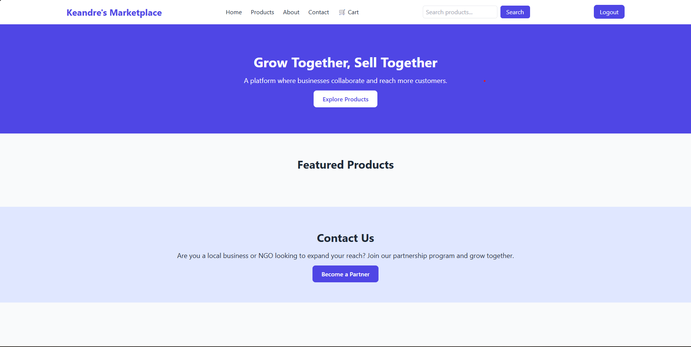
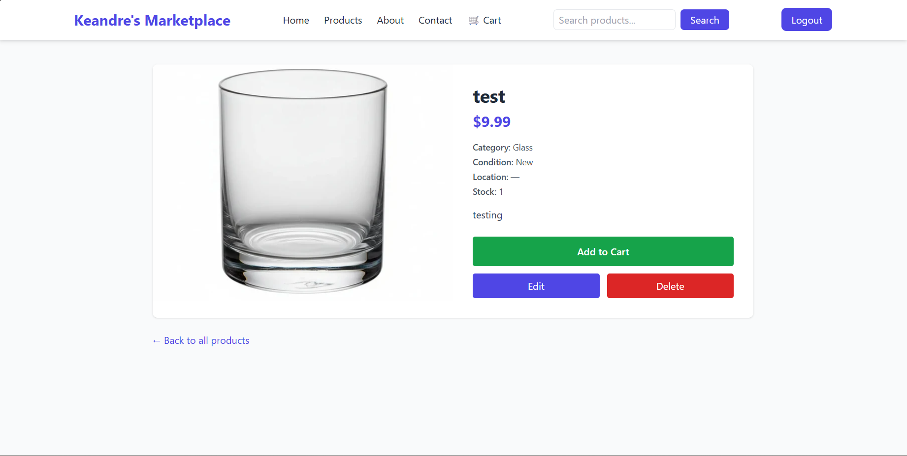

Partnership E-Commerce Platform
A multi-vendor marketplace where any registered user can become a partner and list their own products, while customers shop across the whole catalogue from a single unified cart.



← scroll to see more →
Overview
The platform implements a partnership marketplace model: instead of one shop owner managing all listings, every user can register as a partner and manage their own product catalogue. Customers browse across all partners as if it were one storefront, add items to a single cart, and check out together.
It's structured as a Laravel 11 monolith with role-based access, guests can browse, customers can buy, partners get a "my products" dashboard for CRUD on their own listings, and admins manage the user base from a separate admin area.
Key Features
- Public catalogue - landing page and product listing with detail pages for every product
- Partner dashboard - partners manage their own products at
/me/productswith full create / edit / delete - Multi-image products - each product can carry multiple images via a dedicated
product_imagestable - Shared cart - one cart per user, mixing items from multiple partners; supports add, update quantity, and remove
- Authentication - full register / login / logout flow with separate routes for sign-up and sign-in
- Role-based access -
rolecolumn on users gates the partner and admin areas - Admin panel - dashboard plus a user resource controller for managing accounts
My Role
Contributed to the development of the website by handling UI styling and implementing multiple pages, including the home page, admin dashboard, and contact page. Assisted in developing the admin dashboard view, managing database migrations, and implementing routing logic to improve site functionality and navigation.
Architecture
- Backend: Laravel 11 controllers and Eloquent models -
User,Product,ProductImage,Cart,CartItem - Frontend: Blade templates styled with Tailwind CSS, plus Bootstrap components where it sped things up
- Build: Vite for asset bundling, with the Laravel Vite plugin for hot reload during development
- Database: SQLite for local development - easily swappable for MySQL/Postgres in production via Laravel's database config